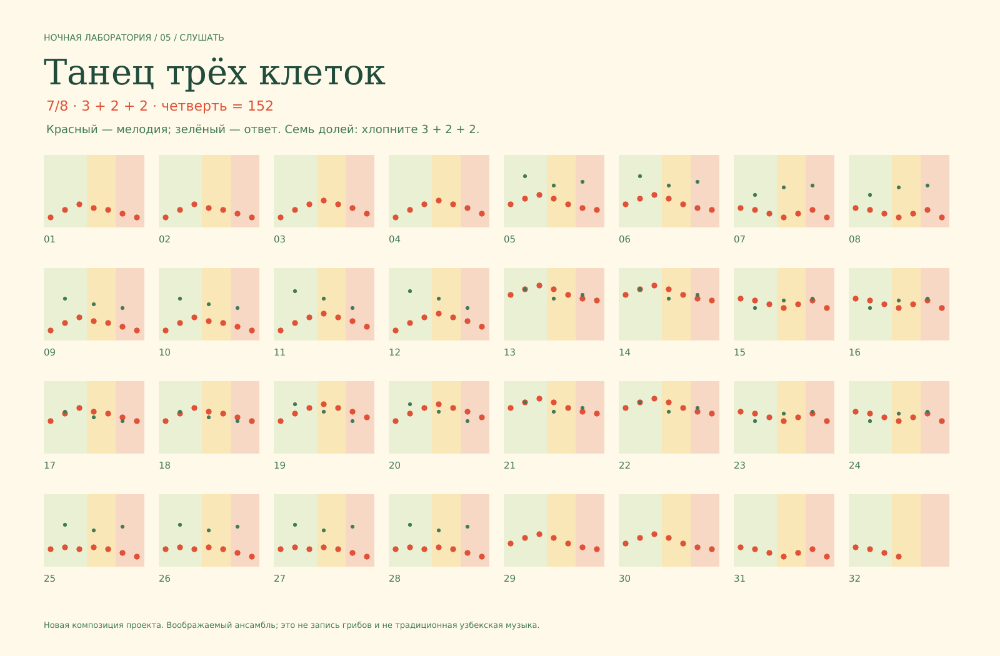

Ночная лаборатория / 05 / новая музыкальная миниатюра
Танец
трёх клеток.
Один голос начинает. Другой подставляет свою ноту. Фраза разрастается в ансамбль — и ненадолго попадает в собственное ловчее кольцо.
Первые такты — один голос и место для соседа.
32 такта · нажмите номер, чтобы перейти
Посмотреть, как растут голоса

Музыка и синтез придуманы для этого проекта. Это воображаемый ансамбль; не традиционная узбекская музыка и не запись живых грибов. Примерно 47 секунд, включая затухание.